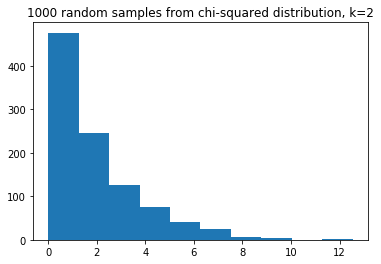

5.5 Testing validity of tests
One of the great advantages of using simulation is that you can test the assertions your teachers make.
For example, in the permutation and t-test page, we asserted that the t-test is not valid when the underlying distribution of the numbers is not close to the normal distribution.
We can investigate this claim by simulating numbers from the null (ideal) world, and seeing what results we get from the t-test.
import numpy as np
import matplotlib.pyplot as plt
%matplotlib inline
The particular variant of the t-test that we were looking at in the page above was the independent sample t test for groups with similar variance. Similar variance means that the distribution of the values in the first group is roughly equal to the distribution in the second group.
For example, soon we will be testing again for a mean difference between the numbers of mosquitoes attracted to each of the 25 volunteers who drank beer, and the equivalent numbers for each of the 18 volunteers who drank water.
See the data page for more details on the dataset, and the data license page.
For an equal variance test, we assume that the spread of the beer values is roughly equal to the spread of the water values, as measured by the standard deviation, or, equivalently, the variance. Remember the variance is the squared standard deviation.
We can pull together the code in permtuation and t-test page to implement our own t-test.
# Import the Scipy statistics routines.
import scipy.stats as sps
def t_test(group1, group2):
""" Independent sample t value and one-tail upper-tail p value.
"""
g1_mean = np.mean(group1)
g2_mean = np.mean(group2)
omd = g1_mean - g2_mean # The observed mean difference.
errors = np.append(group1 - g1_mean, group2 - g2_mean)
g1_n = len(group1) # Number of observations in group1
g2_n = len(group2) # Number of observations in group2
df = g1_n + g2_n - 2 # The "degrees of freedom".
estimated_sd = np.sqrt(np.sum(errors ** 2) / df)
t_stat = omd / (estimated_sd * np.sqrt(1 / g1_n + 1 / g2_n))
upper_tail_p = 1 - sps.t.cdf(t_stat, df)
return [t_stat, upper_tail_p]
The only new thing in the implementation above is the second-to-last line, where we are using a routine in Scipy to calculate the probability value from the t statistic; the details of this are not important for our purpose.
First we go back to the logic of this p value, which is very similar to the logic for permutation test p values:
- Notice that the function calculates
omd = np.mean(group1) - np.mean(group2). Callomdthe observed mean difference. - Assume that we are in the null (ideal) world where the numbers from
group1and the numbers fromgroup2have been drawn at random from the same distribution. - The p value is the probability, in this null world, of seeing a mean
difference that is equal to or greater than the observed mean difference
omd.
You can also think of a p value as an index of surprise. The p value tells you how often you would expect to see an observed mean different this large, or larger, in the null (ideal) world. If the p value is small, then the observed mean difference is surprising. For example, if the p value is 0.05, it means that such difference only occurs 5% of the time by chance in the null world, or 1 in 20 times. You could say it was surprising at a 5% level. Similarly a p value of 0.01 means the result would only occur 1% of the time in the null world, and it is surprising at a 1% level.
Here we recreate the mosquito, beer, water data from the permutation and t-test page:
beer_activated = np.array([14, 33, 27, 11, 12, 27, 26,
25, 27, 27, 22, 36, 37, 3,
23, 7, 25, 17, 36, 31, 30,
22, 20, 29, 23])
water_activated = np.array([33, 23, 23, 13, 24, 8, 4,
21, 24, 21, 26, 27, 22, 21,
25, 20, 7, 3])
We run our t-test over these data to get the same result you saw in the permtuation and t-test page.
t, p = t_test(beer_activated, water_activated)
print('t statistic:', t)
print('Upper-tail p value:', p)
t statistic: 1.640250605001883
Upper-tail p value: 0.054302080886695414
To check our function is doing the correct calculation, we show that the t and p values are the same as the ones we get from using the standard Scipy function for independent t-tests:
result = sps.ttest_ind(beer_activated, water_activated)
print('Scipy t statistic:', result.statistic)
print('Scipy upper-tail p value:', result.pvalue / 2)
Scipy t statistic: 1.6402506050018828
Scipy upper-tail p value: 0.054302080886695414
Here is the observed difference in means:
# Observed mean difference
np.mean(beer_activated) - np.mean(water_activated)
4.433333333333334
The t-test p value above asserts that a difference in means as large as the observed difference, or larger, would only occur about 5% of the time in a null (ideal) world, where the beer and water values come from the same distribution. The observed result is surprising at around the 5% level.
How would we check the assertion that the t-test is valid for normal distributions?
If it is valid, then consider the situation where we do in fact draw two samples from the same normal distribution, and then ask the t test for a p value. If the p value is 5%, it means that such a result should only occur by chance, in the null world, 5% of the time.
So, we can repeat this procedure, drawing numbers that do in fact come from the null world, and check that the t-test only tells us that the result is surprising at the 5% level — about 5% of the time.
n_iters = 10000
p_values = np.zeros(n_iters) # Store the p values
for i in np.arange(n_iters):
# Make 40 numbers from a normal distribution with mean 10, sd 2.
# These are our numbers from the null world.
randoms = np.random.normal(10, 2, size=40)
# Split into two groups of size 20, and do a t-test.
t, p = t_test(randoms[:20], randoms[20:])
# Store the p value from the t-test.
p_values[i] = p
# Show the first 5 p values.
p_values[:5]
array([0.37891583, 0.49396548, 0.59678073, 0.69451794, 0.027721 ])
If the t-test calculation is correct, then we should only see a p value of 0.05 or smaller about 5% of the time.
# Proportion of times the t-test said: surprising at 5% level.
np.count_nonzero(p_values <= 0.05) / n_iters
0.0491
Here the t-test is doing a good job — it labels the result as surprising, at the 5% level, about 5% of the time.
Now we ask - does it matter if the group sizes are unequal? To test this, we do the same calculation, but split the numbers from the null world into one group of 3 and another of 37:
# t-test working on unequal group sizes.
p_values = np.zeros(n_iters) # Store the p values
for i in np.arange(n_iters):
# Make 40 numbers from a normal distribution with mean 10, sd 2.
randoms = np.random.normal(10, 2, size=40)
# Split into two groups of size 3 and 37, and do a t-test.
t, p = t_test(randoms[:3], randoms[3:])
# Store the p value from the t-test.
p_values[i] = p
# Show the first 5 p values.
p_values[:5]
array([0.18448949, 0.91189917, 0.30919735, 0.13982882, 0.85742438])
How good a job is it doing now, with unequal group sizes?
# Proportion of times the t-test said: surprising at 5% level.
# This time wih unequal group sizes.
np.count_nonzero(p_values <= 0.05) / n_iters
0.0509
The proportion is still around 5%, close to what it should be.
What happens if we use a distribution other than the normal distribution?
Here we use some random numbers from a Chi-squared distribution. The distribution looks like this, with a $k$ value of 2 (see the Wikipedia page):
some_chi2_numbers = np.random.chisquare(2, size=1000)
plt.hist(some_chi2_numbers)
plt.title('1000 random samples from chi-squared distribution, k=2')
Text(0.5, 1.0, '1000 random samples from chi-squared distribution, k=2')

We use this highly not-normal distribution to provide numbers to our t-test:
# t-test working on unequal group sizes and not-normal distribution.
p_values = np.zeros(n_iters) # Store the p values
for i in np.arange(n_iters):
# Make 40 numbers from a chi-squared distribution with k=2
randoms = np.random.chisquare(2, size=40)
# Split into two groups of size 3 and 37, and do a t-test.
t, p = t_test(randoms[:3], randoms[3:])
# Store the p value from the t-test.
p_values[i] = p
# Show the first 5 p values.
p_values[:5]
array([0.11381436, 0.81548644, 0.64859727, 0.74229967, 0.10194744])
In this situation the t-test starts to be less accurate - labeling too many random differences as being surprising at the 5% level:
# Proportion of times the t-test said: surprising at 5% level.
# This time wih unequal group sizes.
np.count_nonzero(p_values <= 0.05) / n_iters
0.0697
Does a permutation test do a better job in this situation?
We can test!
Here is a function that does a permutation test:
def permutation(group1, group2, niters=10000):
omd = np.mean(group1) - np.mean(group2)
g1_n = len(group1)
fake_mds = np.zeros(niters)
pooled = np.append(group1, group2)
for i in np.arange(niters):
np.random.shuffle(pooled)
fake_mds[i] = np.mean(pooled[:g1_n]) - np.mean(pooled[g1_n:])
return np.count_nonzero(fake_mds >= omd) / niters
Test this on the mosquito data:
permutation(beer_activated, water_activated)
0.0543
This is very similar to the t-statistic p value — for these data that have fairly equal group size, and a distribution not far from normal:
t_test(beer_activated, water_activated)
[1.640250605001883, 0.054302080886695414]
Now let’s check how the permutation test does when there are unequal group sizes and a not-normal distribution.
The code below will take a few tens of seconds to run, because you are running
many loops in the permutation function, each time you go through the main
loop.
# Permutation working on unequal group sizes and not-normal distribution.
# This is slow - do fewer iterations.
n_iters = 1000
p_values = np.zeros(n_iters) # Store the p values
for i in np.arange(n_iters):
# Make 40 numbers from a chi-squared distribution with k=2
randoms = np.random.chisquare(2, size=40)
# Split into two groups of size 3 and 37, and do a t-test.
# Use fewer iterations than usual to save computation time.
p = permutation(randoms[:3], randoms[3:], niters=1000)
# Store the p value from the permutation test.
p_values[i] = p
# Show the first 5 p values.
p_values[:5]
array([0.365, 0.922, 0.113, 0.922, 0.271])
How does the permutation test do?
# Proportion of times the permutation test said: surprising at 5% level.
# With unequal group sizes, not-normal distribution.
np.count_nonzero(p_values <= 0.05) / n_iters
0.045
It is more accurate than the t-test. In general the permutation method is more accurate for data from not-normal distributions, as well being accurate for normal distributions.